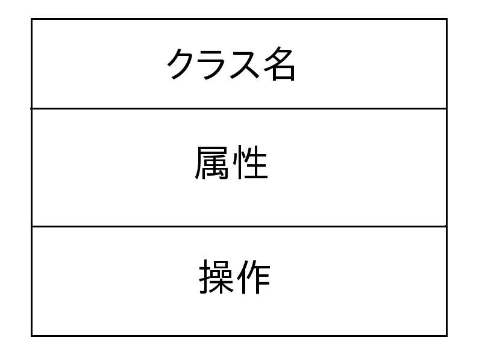
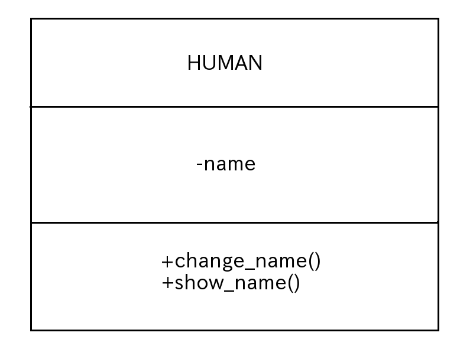

UMLとクラス図
図1:クラスがひとつだけのクラス図 (クリックで拡大)

「クラス名」にはそのクラスの名前
「+」がpublic
ソース1:
public class HUMAN{
private String name;
public HUMAN(){}
public void change_name( String new_name ){
name = new_name;
}
public void show_name(){
System.out.println(name);
}
};
図2: HUMAN クラスのクラス図 (クリックで拡大)
